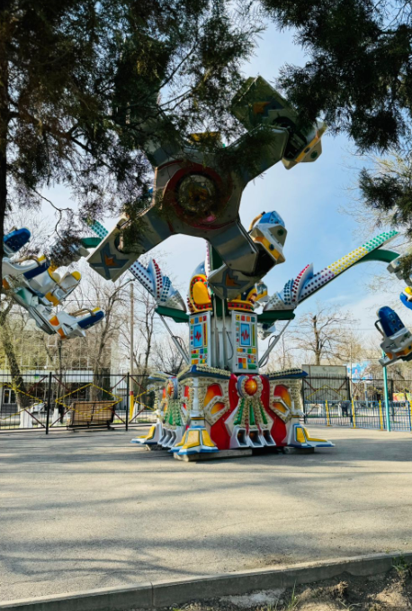
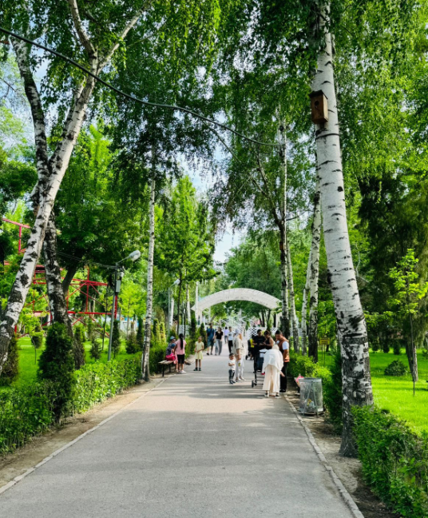

Тараздағы орталық демалыс саябағы
Тұрар Рысқұлов атындағы саябақ — тараздықтар мен қала қонақтарының сүйікті демалыс орны. Мұнда жасыл аймақтар, ойын-сауық алаңдары мен мәдени шаралар үйлесім тапқан, сондықтан бұл саябақ — нағыз тартымдылық орталығы.
- Орналасуы: қаланың орталық бөлігінде
- Ерекшеліктері: аллеялар, субұрқақтар, сахна, аттракциондар
- Танымалдылығы: отбасылық серуендерге арналған орын
Нені табуға болады?
- 🌳 Серуен жолдары мен демалыс аймақтары
- 🎠 Балалар мен ересектерге арналған аттракциондар
- 🎤 Жазғы сахнада мәдени шаралар
- 🍦 Кафе, стритфуд және кәдесыйлар
Қалай жетуге болады?
📍 Тараз қаласы, Байзақ батыр көшесі
🚌 Қоғамдық көлік, такси немесе жаяу
Пайдалы ақпарат
⏰ Жұмыс уақыты: күн сайын 08:00–22:00
💰 Кіру тегін, аттракциондар бөлек төленеді
Т. Рысқұлов атындағы саябақ — бұл Тараздың жасыл жүрегі, мұнда демалып, көңіл көтеріп, қаланың тынысын сезіне аласыз.
ФОТО

